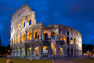
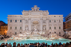

Multimédia
Fotografias Vídeo PoemaFotografias
As fotografias abaixo demonstram algumas das zonas que mais caracterizam a cidade de Roma


Vídeo
Poema
Poema per Rome
Sono dieci giorni che sono via
Dici sorridi e dentro muori
Mi hanno stancato tutti
Donne, auto e amici a volte
Eppure di te io non mi stanco
A volte penso al Tevere e poi canto
Anche se Roma non è solo centro
Per me sei bella come un dubbio spento
Come un rifugio per un ladro
Sei bella come l'Angelo e il peccato
Ti sembra poco? Di' ti sembra poco essere immortale?
Quando ti spegni e viene il tramonto che bellezza che rimane
Sei bella pure senza mare...
Lì giù ai Parioli sono belli i ragazzetti
Ma per me non battono due occhi sopravvissuti a questi parcheggi
Che Roma è il Colosseo ma non è solo quello
Roma è questa panchina rotta che da sogni a quel bambino
Roma è una finestra aperta piena di mollette e panni
È un bimbo col pallone che è partito da San Giovanni
Mio padre mi portava le domeniche allo stadio
Ancora tengo con gran cura la prima sciarpa nel mio armadio
"Roma capo del mondo infame"
Il mio primo saggio da bambino, la cantai col cuore.
Non è San Pietro ma questa chiesa che è a pezzi
La vera Roma è nei vicoli che tu turista non apprezzi
È una battaglia persa con politici corrotti
Però ne parli e dopo ridi perchè a Roma te ne fotti
È un pranzo a casa mia con gli amici di una vita
Quelli che perdono a tresette e se la prendono con la sfortuna
Vuoi stare tranquillo senza troppe cianfrusaglie
Ti cade il mondo sulle spalle e trovi forza dentro un 'daje'
Sono dieci giorni che sono via e come mi manchi
Domani torno e per prima cosa vado a prendere due guanti
Perchè per scrivere di te ci vuole rispetto
Grazie per essere rimasta accesa quando non avevo un letto.